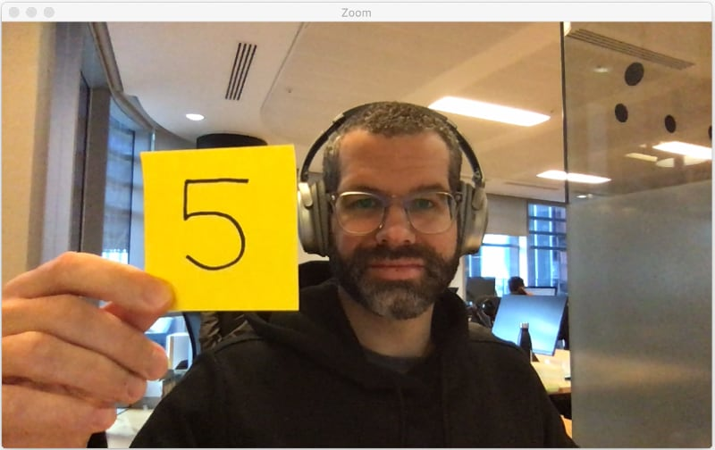
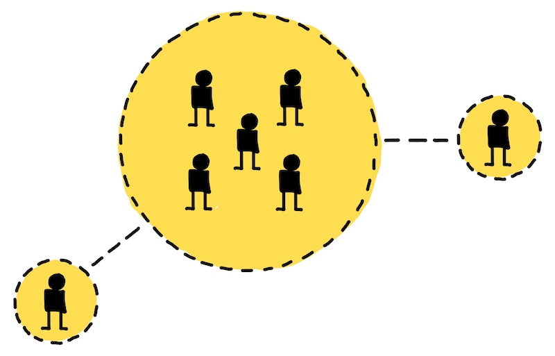

As much as we value individuals and interactions over tools in agile, there is no way around it:
Proper tools are essential for good remote meetings.
If an individual has a bad microphone, we can’t hear them. If they have a bad camera, we can’t see them. If they have a bad internet connection, we will lose them altogether!
Read more

There are many reasons why some teams are partially distributed, with some team members working together in an office and one or more others from somewhere else. Perhaps it hasn’t been possible to hire someone locally with the desired skills, or the team members just value the flexibility to work from home to time to time. Yes, the latter is a partially distributed team too!
Either way, the imbalance between colocated and remote team members means that these teams can be some of the most challenging when it comes to working together as a true team.
Let’s look at some things that can help to reduce the risk of your partially distributed team turning into a “partial team”!
Read more

Before starting this latest incarnation of my blog, I was blogging in a couple of different places. Judging from the traffic, some of those posts still seem valuable to people so I’ve decided to move them here. That way, they won’t disappear when I shut down my older sites.
Rather than rewriting them as I would have using my most current lens, I’ve decided to just post them as-is. So, withour further ado, here are some older posts of mine...
Read more